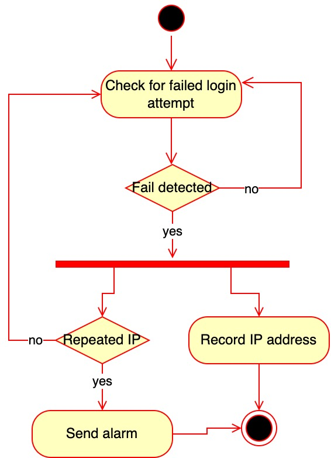
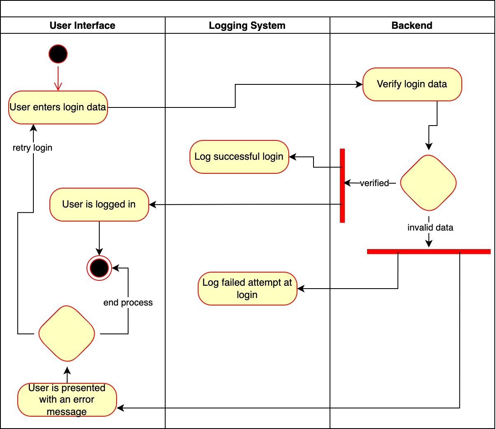

Information about Secure Software Development module
Collaborative Discussion 1: UML flowchart
Initial post
Due to the ever-increasing digitalization of products and services, users and systems sometimes can not keep up with the recommended security measurements. IT systems can become victims of malicious wrong-doings, even if they are well-designed. The attacks mentioned above do not necessarily have to be in the form of a hack, but rather a spiteful attempt to harm the system financially.
For example, a system can have a registration flow which requires sending an SMS message that contains the confirmation code needed for registration completion. If a hacker decides to build a UI click bot or gets access to the actual API route used, they can abuse the system by increasing the costs generated by the SMS service. These attacks could be reduced by implementing an extra layer of security in the form of an app token. This way, the backend can understand the API calls are coming from its app. Unfortunately, UI click bots can evade this. That is where security monitoring and logging come in place.
Some key mitigation points include implementing logging facilities on crucial operations of the application, automated monitoring and detection mechanisms, and ensuring proper storage policies are followed for the logs, such as logs are secured and cannot be deleted (Radhakrishnan, 2020).
For example, if adequate logging and monitoring systems are in use, they can detect attempts at DDoS attacks or constant login attempts and block IP addresses from which those requests are coming. These systems do not have to be highly sophisticated - even a simple chatbot in Slack or an email mechanism could serve as alarms to inform the system engineers about potential problems in the system (Shashimal, 2021).
 
Reference list
Radhakrishnan, R. (2020) Insufficient Logging & Monitoring | OWASP Top 10 | Siemba Inc. Available from:
https://www.siemba.io/post/owasp-top-10-insufficient-logging-monitoring. [Accessed 29 June 2022]
Shashimal, D. (2021) Monitor Application Errors with AWS CloudWatch and AWS Chatbot-Slack Client. Medium.
Available from: https://faun.pub/monitor-application-errors-with-aws-cloudwatch-and-aws-chatbot-slack-client-87c88627d029 [Accessed 30 June 2022].